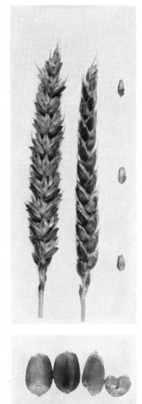
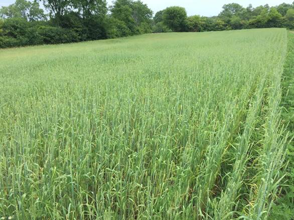
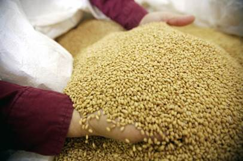

There is a flavor revolution happening throughout the land. Individuals are rediscovering heirloom grains that used to be planted in this country over a hundred years ago and appreciating how wonderfully varied and delicious they are.
Yeasted Bread wheats:
Turkey Red wheat
Red Fife wheat
Marquis Wheat
Flat bread(tortilla) wheat:
White Sonora wheat
Turkey Red wheat
History: The history of Turkey Red wheat in the United States is closely associated with the movement of Russian Mennonite immigrants to the middle Great Plains. These people originally went from west Prussia to southern Russia about 1770 because of certain land grants and civil privileges offered by the Government under Empress Catherine. One hundred years later their descendants, desiring further advantages to be obtained in America, emigrated to the middle Great Plains and settled principally in Kansas. Each family brought over a bushel or more of Crimean wheat for seed, and from this seed was grown the first crop of Kansas Turkey Red hard winter wheat.
Flavor: complex, nutty
Turkey red wheat field

Sold online on the following websites:
https://breadtopia.com/store/turkey-red-wheat-berries/
https://www.cottagecraftworks.com/amish-organic-ancient-red-wheat-berry-25-lb
http://www.anarchyacres.com/turkey-red-wheat
https://www.grainsfromtheplains.com/product-page/turkey-red-heirloom-hard-winter-wheat-berries
https://www.sunriseflourmill.com/turkey-red-whole-wheat-bread
Red Fife wheat
History: Around 1842, David Fife, of Ontario, Canada, received a small sample of wheat from a friend in Glasgow, Scotland. The friend had obtained the sample from a shipload of wheat from the port of Danzig in Germany, but supposedly of Russian origin. Mr. Fife sowed the wheat in the spring. From it descended the wheat that became known as "Red Fife"; throughout Canada.
Flavor: nutty, honey overtone
Red Fife Wheat

Sold online on the following websites:
http://www.anarchyacres.com/red-fife-wheat
https://bartonspringsmill.com/product/red-fife-1/
https://breadtopia.com/store/organic-red-fife-wheat-berries/
Marquis Wheat
History: Marquis is a cross between Red Fife and Red Calcutta (imported from India in the late 1800's), developed in Canada in 1906. Attention was first attracted to Marquis wheat in the United States through its having won prizes at several expositions. Seed was introduced by the United States Department of Agriculture in 1912 and 1913. A considerable quantity was brought into the country for sowing in 1913. In 1919, only 7 years after its introduction, it made up at least 60 percent, or nearly 12,000,000 acres, of the total spring-wheat acreage of the United States.
Flavor: rich and subtle
Sold online on the following websites:
http://www.anarchyacres.com/marquis-wheat
https://bartonspringsmill.com/product/marquis-1/
Old photograph of Marquis wheat:

Marquis Wheat Field

White Sonora wheat
History: White Sonora Wheat is on of the oldest wheat in the Americas. An ancient heritage wheat brought to the Sonoran desert by Padre Eusebio Kino, a Jesuit Missionary. He introduced this wheat to the Pima people around 1685.
Flavor: sweet, nutty, rich
Sold online on the following websites:
https://shop.nativeseeds.org/products/rf004
http://store.ramonafarms.com/SMOIK-PILKAN-Wheat-Berries-White-Sonora/productinfo/WHTBWS1/
https://bartonspringsmill.com/product/sonora-1/
White Sonora Wheat

Historical Sources:
USDA TECHNICAL BULLETIN NO. 795 June 1942 Classification of Wheat Varieties Grown in the United States in 1939
https://academics.hamilton.edu/foodforthought/Our_Research_files/wheat.pdf